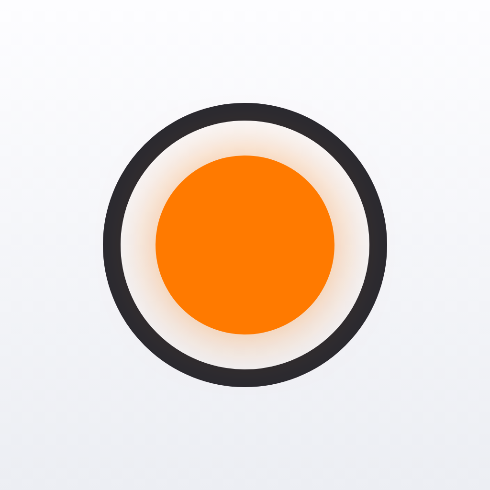
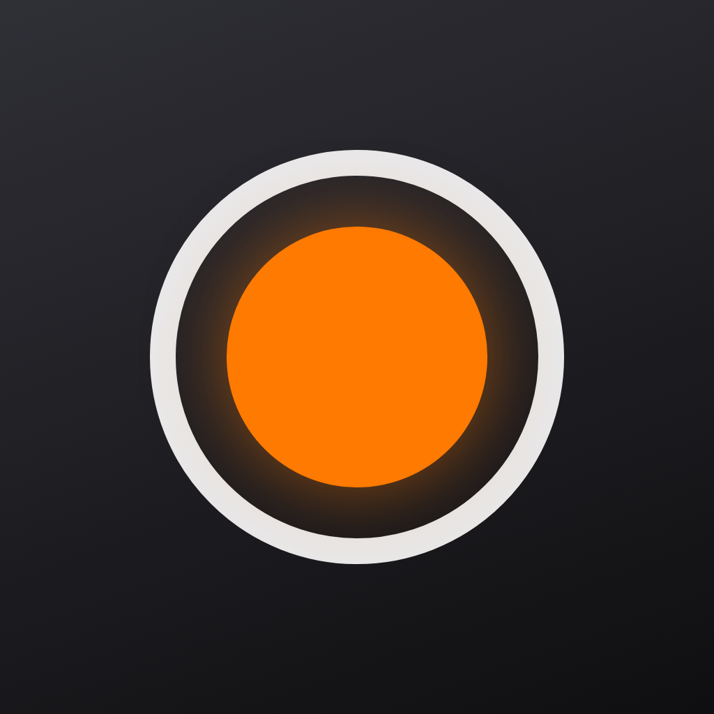

Settled: the sheet opens on the tap and the file is promised, not waited for. “Progress, then the sheet” made the person wait before they were allowed to say what they wanted — and what they wanted (send this to Dan) is knowable now, while the render is still running. iOS is built for exactly this: the share sheet is raised immediately and handed a promised file (UIActivityItemProvider), so choosing a destination and rendering happen in parallel; pick AirDrop at 40% and the system waits on the provider and shows its own progress. Both phones auto-run the render on load — close the sheet and tap Share to replay it.
The bigger lever is upstream. This UI only exists because Enhance is a live setting rather than baked in on save — open question in 13d. If the file is rendered on save, or cached after the first share, then sharing an unchanged demo is a file copy: no progress, no promise, sheet opens instantly. What’s below is the slow path, hit only when Enhance moved since the last render.
| Situation | What happens | Why | Level |
|---|---|---|---|
| Already rendered — Enhance unchanged since the last share | Sheet opens immediately. No ring, no bar, nowhere. | The file exists. Progress for a copy is a lie about how long things take, and it trains people to expect a wait. | 0 · silent |
| Render under ~500 ms | Sheet opens; the header shows nothing unless the deadline passes, then the bar fades in. | A progress indicator that appears and disappears inside half a second reads as a glitch. Same trick iOS uses for spinners. | 0 · silent |
| Normal render — a few seconds | 17b. Sheet up, promised file, progress on the header row. | Intent and work run in parallel. This is the default path. | 1 · in place |
| Long render — a 40-minute take | Sheet closes on the pick; the render finishes in the reserved notice slot (16a) with the share glyph as a ring. Screen stays fully live. | Nobody should hold a sheet open for a minute. The slot for a persistent mid-flow status already exists, so this needs no new component. | 1 · in place |
| Share from a row swipe in the list | Same promise, opened from the row. The row’s length is replaced by a ring — the processing variant of DemoRow (S07). | The list already has a shape for “this demo is busy”. Reuse it rather than inventing a second one. | 2 · row |
| You leave the screen mid-render | Render continues to the destination you already chose. Nothing raises itself; the list row shows the ring until it lands. | The destination was captured before you left, which is the whole point of promising the file — there is nothing left to ask you. | 1 · in place |
| Render fails — no space for the temp file | Notice row: Couldn’t prepare this demo / Try Again. Playback keeps working; the original is untouched. | Same channel and same shape as playback failure (16d). Nothing was lost, so it isn’t an alert. | 2 · row |
| Cancel | Stops the render, deletes the temp file, sheet closes. Nothing said afterwards. | You asked for it to stop and it stopped. A confirmation would be noise. | 0 · silent |
Three things this adds to the register in 14b: S42 preparing to share, S43 render failed, S44 share cancelled mid-render — plus the copy in S07 now covers both rendering-on-save and rendering-for-share. Try next: “wire 17b into 1c and 2c” · or “mock the list-row ring (S07)” · or settle the 13d question so this is only ever the slow path.
Settled on the 15a treatment: one reserved slot above the transport carries every notice — centred line, optional second line, optional tinted capsule. No cards, no empty states, no second channel. It keeps the screen identical in every state (nothing above it moves, nothing below it jumps) and it’s the only form that already exists in the layout. The row and full-block forms are gone.
The slot is shared with the transient coaching line, so it needs precedence, not a second channel: mic state → playback failure → capacity → coaching, highest one wins. In practice they barely compete — coaching only speaks while capture is running, and every mic notice means capture can’t run. Two behavioural differences hold: a notice appears instantly and persists, where coaching cross-fades; and only a notice may carry an action.
| Notice | Channel | Form | Why | Level |
|---|---|---|---|---|
| Mic denied / restricted / unavailable | Notice | Reserved line — 16a | Persistent and total, but the screen still shows what it is. Record dims, so the notice doesn’t have to shout that the recorder is out of action. | 1 · in place |
| Interruption — call, Siri, another app | Neither | State change only: header reads Paused, right button becomes Resume | The interruption already interrupted you. A notice explaining the thing you just lived through is noise, and the take is intact. | 1 · in place |
| Recording failure — write error, storage full, revoked mid-take | Alert | System alert — 15e | Capture stopped against your expectation, and the answer to “did I lose it?” can’t wait for you to notice a row. The alert leads with what was saved. | 3 · alert |
| Playback failure — file missing or damaged | Notice | Reserved line — 16d | Persistent and actionable, but local to one demo. You asked for this by tapping the row, so no alert; the rest of the library is fine and shouldn’t be dramatised. | 1 · in place |
| Playback reached the end | Neither | None — marker parks, button returns to Play | Nothing failed and nothing was decided. S34 stays silent. | 0 · silent |
| Low space, non-default input | Notice | Reserved line — 16a, no capsule | Same slot, no action. S20/S21 stop needing their own bespoke chips beside the timer. | 1 · in place |
| Input too quiet / clipping | Coaching | Reserved line, three-case enum, cross-fades | Transient and unactionable, so it sits lowest in precedence: any notice takes the slot from it. Only meaningful while capture runs, when no notice is competing anyway. | 1 · in place |
On Resume: dimmed, not enabled-and-inert. The transport already has one rule — Play sits at opacity .35 and refuses taps until a take exists — and Resume is the same promise about the same take. An enabled control that does nothing is a lie the user has to test to disbelieve, and it also breaks the disabled-Record treatment in 16a, where dimming is exactly what tells you the recorder is out of action. One rule: a transport button is dim whenever it cannot act, whether the reason is “no take yet” or “no microphone”.
What this changes in build: one slot, one resolver — the Take screen picks the highest-precedence message and renders it, and InlineNotice in 13a is that slot rather than a new component. S18/S19/S22 still need mocks, but they now have a form to fill rather than a decision to make.
“Every notice the recorder can decide is visible on the screen” was in the acceptance criteria, but four permission states were only ever written down: denied, restricted, no input device, and access revoked between launches. None had a mock, no disabled-Record treatment existed, and nothing routed to Settings. These are those four, plus the alert that carries the mid-take cases. Placement here is now final — 16 confirms this slot as the one channel for every notice, and sets the precedence rule that lets it share with input coaching. One rule holds across all of them: only the record flow is affected — the list and playback stay fully usable, so nothing already captured is held hostage to a permission.
| State | Line on screen | Route out | Delivery | Level |
|---|---|---|---|---|
| S13 Denied | Microphone access is off | Open Settings → app settings pane | In place, no alert. You caused this by tapping Don’t Allow. | 1 · in place |
| S41 Restricted | Microphone access is restricted / Managed in Screen Time | None. The switch won’t move. | In place, no alert. | 1 · in place |
| S14 No microphone | No microphone available / Connect a microphone to record | None. Settings can’t fix hardware. | In place, no alert. | 1 · in place |
| Revoked between launches | Alert: Microphone Access Is Off — “Demo Memos can’t record without the microphone. You can turn access back on in Settings.” | Not Now / Open Settings | Alert on entry, then S13 behind it. It worked last time, so it earns the interrupt. | 3 · alert |
| S28 Revoked mid-take | Alert: Recording Stopped — names the length saved and the demo it went into, then Settings. | Not Now / Open Settings | Alert on return. Lands on Stopped with the partial take. | 3 · alert |
| S27 Storage full mid-take | Alert: Storage Full — same sentence shape, same saved-length promise. | OK / Manage Storage | Alert on return. Same component, same button order. | 3 · alert |
Two rules worth carrying into build: a permission notice never uses red — it is a state, not an error — and an alert only appears when capture stopped or never started against your expectation. Everything the user themselves just switched off resolves in place. Still open on the criteria: interruption (S22), no-input and clipping coaching (S18/S19), and playback failure on a missing file (S39 unhappy path) — all four reuse the pieces above, and I can mock them next if you want the criterion fully closed.
A walk through all three screens, state by state, in the order a user meets them. Each state gets a stable id (S01…S41) so we can talk about them in review and tick them off as they get mocked. marks the eleven you listed — all present, though four of them split into more than one state once you look at where they actually live (see 14c). This is the screen-level companion to 13c, which rates the same conditions by how loud they’re allowed to be.
| State | How you get there | What’s different on screen | How you leave | Mock | |
|---|---|---|---|---|---|
| Launch & the list — Onboarding, DemosList | |||||
| S01 | First run intro | First launch only, hasOnboarded unset | Icon, welcome title, three benefit rows, one Continue. Nothing else reachable. | Continue → empty list, never seen again | 5a |
| S02 | List · empty | After onboarding, or every demo deleted | One quiet centred line where the rows would be. New Demo pill stays put. No Edit button. | New Demo → S15 | 4a |
| S03 | List · with recordings | One or more saved demos | Rows of name · when · length, newest first. Edit appears top-right. | Tap a row → S30 · New Demo → S15 | 1a |
| S04 | List · sectioned | Enough demos to scroll | Date headers — Today / This Week / Earlier — so scanning survives length. | Same as S03 | TO MOCK |
| S05 | Row swiped | Swipe a row left | Row slides to reveal Share and Delete. One row at a time; the rest of the list is untouched. | Tap an action, swipe back, or scroll | 1a |
| S06 | Delete confirm | Delete from the swipe | Destructive confirm sheet naming the demo. Row still visible behind it. | Delete → row animates out · Cancel → S05 | TO MOCK |
| S07 | Row · processing | Take saved, Enhance still rendering | Small activity marker where the length goes. Row is present and tappable throughout. | Render finishes → S03. Only exists if Enhance bakes in on save (13d) | TO MOCK |
| S08 | Row · not downloaded | File offloaded to iCloud or evicted | Cloud marker replaces the length. Everything else reads normally. | Tap → S39 | TO MOCK |
| S09 | Row · recovered | First launch after a crash mid-take | The partial take is simply in the list at its true length, tagged Recovered for this session only. No dialog, no explanation. | Tag clears next launch | TO MOCK |
| S10 | List · editing | Tap Edit | Rows gain a delete affordance; Edit becomes Done. New Demo stays available. | Done → S03 | TO MOCK |
| S11 | New Demo blocked | No mic, or no room to record | Pill dims and one line says why. If it’s storage, the alert lands before the recorder opens — you never see a recorder you can’t use. | Fix the cause → S03 | TO MOCK |
| Getting permission — TakeScreen | |||||
| S12 | Requesting permission | First ever tap on Record | iOS prompt over the recorder. The count-in does not begin, so no time is lost while you decide. | Allow → S16 · Don’t Allow → S13 | TO MOCK |
| S13 | Permission denied | Don’t Allow, or switched off in Settings later | Record button disabled. One line: Microphone access is off with Open Settings. The list and playback stay fully usable — nothing is held hostage. | Grant in Settings → S15 | 15a |
| S14 | Mic unavailable | No usable input device | Same shape as S13, different line: No microphone available. No Settings link, because Settings can’t fix it. | Device appears → S15 | 15c |
| S41 | Permission restricted | Screen Time or an MDM profile blocks the mic | Same shape as S13, no Settings route — the switch won’t move for this user. Second line: Managed in Screen Time. | Restriction lifted → S15 | 15b |
| Recording — TakeScreen | |||||
| S15 | Ready | Recorder opened with permission granted | Flat armed waveform, 00:00, Enhance ready to set. Play is dim, right button is Record. Header: Cancel / —. | Record → S16 · Cancel → S03 | 1b |
| S16 | Count-in | Record tapped | The orange disc becomes the numeral, 4·3·2·1 inside the ring, with soft ticks. Timer still reads 00:00. | Last beat → S17 · tap again or Cancel aborts to S15 | 8a |
| S17 | Recording | Count-in completes | Waveform runs live at the right edge, timer counts up, right button is Stop. Play stays disabled. Header keeps Cancel only — there is no Done until you stop. | Stop → S24 | 1b |
| S18 | Recording · no input | Flat levels for more than ~3s | Coaching line under the waveform: We’re not hearing anything. Bars stay honestly flat rather than faking life. | Level returns → S17 | TO MOCK |
| S19 | Recording · clipping | Peaks at or above full scale | Peaking bars turn red as they pass; one line: Too loud — move back a little. | Levels drop → S17 | TO MOCK |
| S20 | Recording · low space | Under ~5 min of headroom, at start or crossed mid-take | Amber 5 min left beside the timer. Recording is otherwise untouched. | Runs out → S27 | TO MOCK |
| S21 | Recording · other input | AirPods or another non-default input is active | A chip beside the timer names the input. Not a warning — capture is fine. | Route changes back → S17 | TO MOCK |
| S22 | Interrupted — paused | Call, Siri, or another app claims the mic | Capture pauses at that instant. Header reads Paused, right button becomes Resume. Nothing is lost and nothing is alerted — the interruption already interrupted you. | Resume → S17 · Stop → S24 | TO MOCK |
| S23 | Recording in background | App backgrounded or device locked | Capture continues. iOS red indicator plus a Live Activity carrying elapsed time and Stop. | Return → S17 · Stop from the Live Activity → saved | TO MOCK |
| S24 | Stopped | Stop tapped, take longer than 1s | Waveform freezes as the whole take. Play lights up, right button becomes Resume, header gains Done and Share. | Done → S03 · Play → S31 · Resume → S17 · Cancel → S29 | 3a |
| S25 | Take discarded | Stop within a second of starting | Nothing. Screen returns to Ready, no row is written, no message shown. | → S15 | no UI |
| S26 | Length cap reached | Timer hits the maximum, if we set one | Stops and saves exactly as a manual Stop would, plus one line: Maximum length reached. | → S24. Depends on the cap decision in 13d | TO MOCK |
| S27 | Disk full mid-take | A write fails | Recording stops itself and the partial take is saved. Alert states the length that survived: Storage full — your demo up to 4:12 was saved · Manage Storage / OK. | OK → S24 with the partial take | TO MOCK |
| S28 | Permission revoked mid-take | Access pulled while backgrounded | Stops and saves. Alert on return says what was kept, with Open Settings. | OK → S13 | 15e |
| S29 | Cancel with a take | Cancel tapped in S24 | Undecided: silently discard, or confirm first. A recording someone just made is worth a confirm; an accidental one isn’t worth a tap. | → S03 either way | DECIDE |
| Playback — TakeScreen | |||||
| S30 | Loaded, at start | Tap a row in the list | Header is ‹ Demos / Share. Whole take drawn with the marker at the beginning; Enhance shows the saved setting. | Play → S31 · drag → S33 · tap title → S35 | 1c |
| S31 | Playing | Play tapped | Waveform scrolls under the fixed orange marker, played side warm. Timer shows position; left button becomes Pause. | Pause → S32 · reaches end → S34 | 1c |
| S32 | Paused | Pause tapped | Motion stops, position holds, button returns to Play. Distinct from S22: nothing is being captured here, so this is a user choice, not a rescue. | Play → S31 | 1c |
| S33 | Scrubbing | Drag the waveform | The take follows your finger under the marker; timer tracks. Audio picks up where you release if it was playing. | Release → S31 or S32 | 12a |
| S34 | At end | Position reaches the last bar | Marker parks at the end, button returns to Play. Next Play restarts from zero rather than doing nothing. | Play → S31 from 00:00 | TO MOCK |
| S35 | Renaming | Tap the title on playback | Title becomes an editable field, text selected, keyboard up. Everything below carries on — you can rename while it plays. | Return or tap away commits → S30 | TO MOCK |
| S36 | Renamed to empty | Field cleared, then blurred | Falls back to the auto name (Demo 12). No validation error, because there’s no mistake to report. | → S30 | TO MOCK |
| S37 | Long name | Name outruns the space | Tail-truncated in the list; wraps to two lines maximum on playback, and the waveform gives up the height. | — | TO MOCK |
| S38 | Headphones unplugged | Route change during playback | Playback pauses per iOS convention. Visually identical to S32, no message. | Play → S31 | = S32 |
| S39 | Downloading | Tap a not-downloaded row (S08) | Inline progress in the row, then it opens and plays. No separate screen, no spinner takeover. | Done → S30 and plays | TO MOCK |
| S40 | Share sheet | Share on playback, or Share from a row swipe | Native share sheet over whatever you were on. Playback keeps its position behind it. | Dismiss → back where you were | 1a |
Appearance and accessibility settings multiply this list rather than adding to it — dark mode (2a/2b/2c), Dynamic Type to XXL, Reduce Motion, VoiceOver and Low Power Mode each need to hold across all forty. Their rules are set in 13c.
DemoRow carries a playing variant, which implies rows can play in place without opening playback. If that’s wanted, it needs its own state and its own transport; if not, drop the variant.Try next: “mock the permission trio S12–S14” · or “mock the recording edges S18–S22 as one sheet of phones” · or “S29: add a discard confirm”
What the app is actually made of, and every state each piece has to survive. Three screens (1a/1b/1c) plus a modal layer — small enough that almost everything is shared. Items marked TO BUILD have no mock yet. The state matrix below rates each condition by how loud it should be: the house rule is that nothing interrupts recording unless recording has already stopped.
1 · Screens
Home. The only navigation root; owns the demo collection and the New Demo action.
One screen for record and playback. Everything below the header is constant; only the header and the right transport button change (see 1d).
Shown once, gated by hasOnboarded. No state beyond appearance.
2 · Structure
Leading action · title · trailing action. Four configurations, one per TakeScreen state, plus the list's own.
Name, when, length. Wrapped in SwipeRow for Share / Delete.
One centred line above the New Demo pill (4a).
Inline rename on the playback title. Empty on blur reverts to the auto name.
3 · Controls
Play (left) + Record/Stop/Resume (right). Same size, centred pair, 44pt minimum — the right button is the only shape that changes.
The one control you learn. Scrolling tick scale under a fixed marker; 0–1 maps to a tone name (Dry → Room → …). Present on record and playback alike.
Elapsed / position. Also the host for the capacity warning ("5 min left").
Single primary action on the list. Disabled when the mic is unavailable.
4 · Waveform
Recording surface — one GPU layer, live edge on the right, warm bloom from Enhance (6a).
Playback surface — centre-locked playhead, waveform scrolls under a fixed orange marker (12a).
Names the input when it isn't the built-in mic ("AirPods Pro"). Reuses the MonitorPill shape.
5 · Overlays & feedback
Native share sheet. Reached from a row swipe or the playback share icon.
Destructive confirm for Delete.
Grabber · symbol · one line · callout · one OK. Currently the monitoring explainer (9a); the pattern generalises.
One quiet line in the layout's existing hint slot — the workhorse for every recoverable problem. Optional trailing action (Open Settings).
System alert. Only for things that already stopped the recording or that block it outright.
Lock-screen / Dynamic Island presence while recording in the background: elapsed time + Stop.
| State | Trigger | What the user sees | Loudness | Owner |
|---|---|---|---|---|
| Microphone & permission | ||||
| Not yet asked | First tap on Record | iOS permission prompt. The count-in doesn't begin until it's granted, so no time is lost. | 0 · silent | TransportPair |
| Mic denied | "Don't Allow", or switched off in Settings | Record button disabled; one line reads Microphone access is off with Open Settings. The list and playback stay fully usable. | 1 · inline | TakeScreen · InlineNotice |
| Revoked mid-take | Permission pulled while backgrounded | Recording stops; everything captured is saved and named. Alert on return: what was saved, and Open Settings. | 4 · alert | Alert |
| No input device | No usable microphone (hardware fault) | Record disabled, one line: No microphone available. | 1 · inline | InlineNotice |
| Storage & capacity | ||||
| Low space | Under ~5 min of headroom, at start or crossing mid-take | Timer gains an amber 5 min left. Recording is untouched. | 2 · status | Timer |
| Out of space mid-take | Write fails | Recording stops immediately and the partial take is saved. Alert: Storage full — your demo up to 4:12 was saved · Manage Storage / OK. | 4 · alert | Alert |
| Out of space at start | New Demo tapped with no room | Alert before the recorder opens, so you never see a recorder you can't use. List unchanged behind it. | 4 · alert | Alert · DemosList |
| File not downloaded | Offloaded to iCloud / evicted by the system | Row shows a cloud marker instead of a length. Tapping downloads it with inline progress, then plays. | 1 · inline | DemoRow |
| Interruptions & audio route | ||||
| Call or Siri | Audio-session interruption | Recording pauses at that instant, header reads Paused, right button becomes Resume. Nothing lost, no alert. | 2 · status | TakeScreen · NavHeader |
| Another app takes the mic | Background app claims input | Identical to a call — pause and offer Resume. | 2 · status | TakeScreen |
| Headphones unplugged | Route change during playback | Playback pauses, per iOS convention. No message. | 0 · silent | TransportPair |
| Bluetooth input | AirPods are the active input | A chip beside the timer names the input. No warning — capture is fine; only live monitoring isn't (7a). | 2 · status | InputPill |
| Recording edges | ||||
| Nothing coming in | Flat levels for >3s | Coaching line under the waveform: We're not hearing anything. Bars stay flat rather than faking activity. | 1 · inline | LiveWave · InlineNotice |
| Clipping | Peaks at or above full scale | Peaking bars turn red; one line: Too loud — move back a little. | 1 · inline | LiveWave |
| Take under 1 second | Stop tapped immediately | Discarded; screen returns to Ready. No row, no message. | 0 · silent | TakeScreen |
| Length cap reached | Timer hits the maximum | Recording stops and saves, exactly as if you'd tapped Stop, plus one line: Maximum length reached. | 1 · inline | InlineNotice |
| Recording in background | App backgrounded or device locked | Capture continues. iOS red indicator, plus a Live Activity with elapsed time and Stop. | 2 · status | LiveActivity |
| App killed mid-take | Crash or force quit | Next launch recovers the partial take into the list at its true length, tagged Recovered for that session. | 0 · silent | DemosList · DemoRow |
| Enhance still rendering | Take saved, processing not finished | Row is present and tappable with a small activity marker where the length goes. | 1 · inline | DemoRow |
| Content & data | ||||
| Empty list | First launch, or all demos deleted | Quiet centred guidance with New Demo still in place (4a). | 0 · silent | EmptyState |
| Renamed to empty | Title cleared and blurred | Falls back to the auto name (Demo 12). No validation error. | 0 · silent | TitleField |
| Long name | Name exceeds the row | Tail-truncated in the list; wraps to two lines maximum on playback. | 0 · silent | DemoRow · TitleField |
| Long list | Enough demos to scroll | Date sections — Today / This Week / Earlier — so scanning stays possible. | 0 · silent | DemosList |
| Delete | Swipe left → Delete | Destructive confirm, then the row animates out. No undo in the MVP (see open questions). | 3 · sheet | ConfirmSheet |
| Accessibility & system | ||||
| Dark mode | System appearance | Designed and signed off (2). Orange stays the only accent. | 0 · silent | all |
| Large text | Dynamic Type up to XXL | Rows grow to two lines; the waveform gives up height before any text shrinks; transport stays 44pt. | 0 · silent | DemoRow · TakeScreen |
| Reduce Motion | System setting | Waveform holds a static level read instead of animating; sheets cross-fade rather than slide. | 0 · silent | LiveWave · sheets |
| VoiceOver | Screen reader active | The waveform is one element with a value, not 46 bars. Transport announces state and elapsed time. | 0 · silent | all |
| Low Power Mode | System setting | Waveform frame rate drops. Capture quality is never affected. | 0 · silent | LiveWave |
Try next: "mock the mic-denied and storage-full screens" · or "design the Live Activity" · or "add InlineNotice to 1b so I can see all four variants"
Three screens, nothing spare: Demos (home) → Record → Playback. Tapping New Demo opens the recorder: set the Enhance slider, then tap the button to start capturing. The same slider rides along on playback, so the one control you learn works everywhere. Rename is a tap on the title. Sharing is a key feature and follows iOS convention: swipe a demo left in the list for Share / Delete, or tap the share icon on playback — both open the native share sheet.
Try next: "the list row should expand into a mini player on tap"
The same three screens in dark mode (mirrors 1a/1b/1c). Backgrounds go near-black, text inverts, cards become translucent glass, and the share sheet darkens — while orange stays the single accent for the waveform, record button and Enhance control. On device this follows the system setting automatically; shown here explicitly so you can see both.
Once you stop, you should be able to play the take back or keep recording onto it. Two labelled buttons are the most self-explanatory and hardest to mis-tap — tap Resume and the waveform starts scrolling again (Play dims to disabled and the button becomes Stop), tap Play to preview.
Final scrub design, now live in 1c and 2c. The position locks to the horizontal centre and the waveform scrolls under a fixed orange marker (echoing the Enhance dial): a 4px line, no dot, just clearing the bars. Played side keeps the warm amber, gently fading over the last few bars so the marker separates. Hard edges — the take runs full-width. Drag the waveform to scrub.
Try next: "tweak the fade / line weight" if you want to nudge it further · or move on to another screen.
Tap record → three beats before capture starts, with soft ticks. The timer starts at 00:00 on the first captured beat, and tapping Cancel (or the button itself) aborts. One visual per option, nothing added to the layout. Tap the record button in each phone to feel it.
Try next: "make the count length a setting (off / 3 / 4 beats)" · or "pick one and wire it into 1b"
One GPU surface on device (SwiftUI Canvas / Metal). The study walks the recording lifecycle, playback states, and the Enhance reaction — a subtle warm bloom that widens with "space".
A one-time intro, dismissed for good once the user taps Continue (a hasOnboarded flag persists after first launch — it never shows again). The iOS system "What's New" pattern: app icon, welcome title, three benefit rows, one Continue. The lead row now sells the app's core promise — Voice Memos, but for demos — rather than monitoring, which won't read well on Bluetooth headphones.
Try next: "wire 5a as the first screen" · or "show onboarding in dark mode too"
Before there's anything to list. iOS keeps empty states quiet and centred, with the primary action (the New Demo pill) still in place so the next step is obvious.
The final record-disc mark (10c), built out as the complete App Store delivery. iOS 18+ takes a single 1024×1024 master per appearance and generates every smaller size automatically. Only the Default master is required — Dark and Tinted (monochrome, system-tinted) are optional but recommended, and without them iOS just falls back to your Default in those contexts. All are shipped with no rounding and no alpha baked in (the OS applies the squircle mask). The app ships both a light and a dark icon (plus Tinted). Below: the appearances, the light/dark home screen, and the size ladder for each — proving it holds down to 40px.


Export note: render each appearance to a flat 1024×1024 PNG (no transparency, square corners) and drop them into the asset catalog's Any / Dark / Tinted slots — iOS generates every size above. Try next: "add an alternate app icon (the orange-field version) as a user-selectable option".
Live monitoring — hearing yourself through headphones before you commit — is parked here for a later release. The MVP records straight away (New Demo → set Enhance → record): no monitor state, no top-right monitoring indicator, and no “dial in the sound, then record” step. The explorations below capture how monitoring would behave if it ships.
If monitoring ships, Bluetooth latency makes it unusable — so it'd be wired-only. Rather than a modal or banner, the record screen just states it: the header pill dims to Monitoring off and the hint line reads "Plug in wired headphones to hear yourself". Nothing added, nothing blocked — recording works exactly the same, and both revert the moment wired headphones are plugged in.
Building on 7a: with no wired headphones the pill reads as a tappable control — dimmed “Monitoring off” gains a small ⓘ affordance. Tapping it raises the standard iOS explainer — grabber, headphones symbol, a line of what it does, a wired-only callout, one OK. It doesn’t block recording, dismisses cleanly, and reverts the moment wired headphones are connected. Tap the pill (it opens on load — close, then tap to reopen).
Try next: “show the sheet in dark mode too”